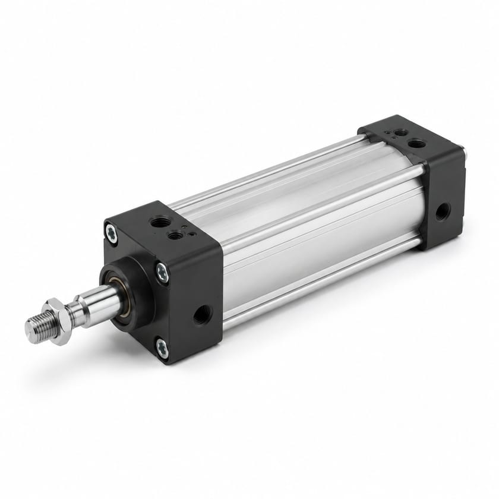
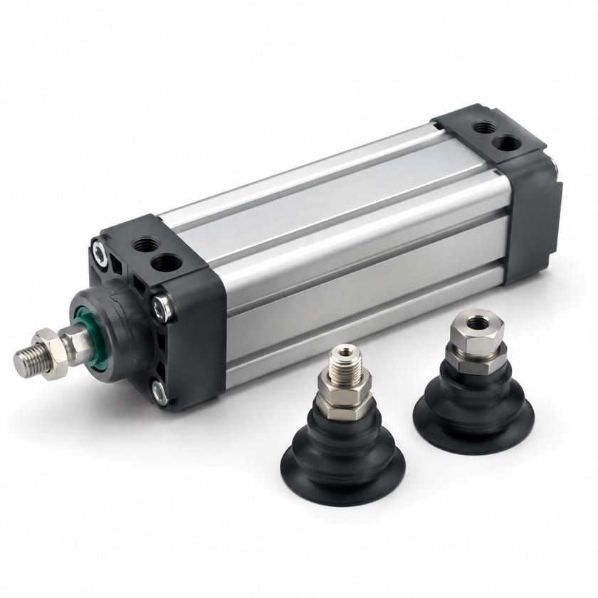
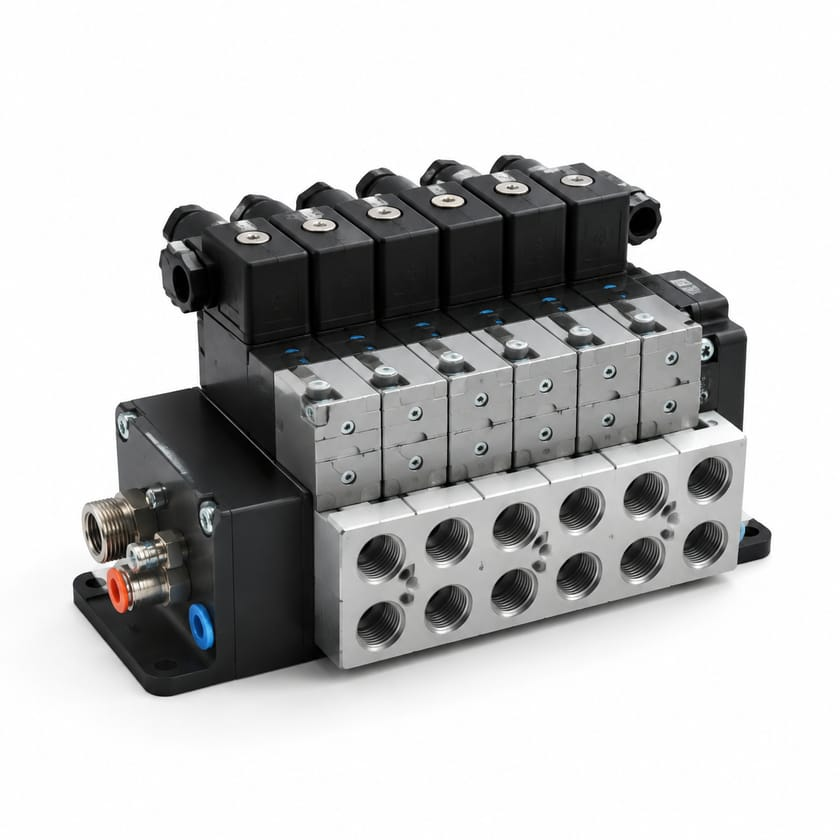
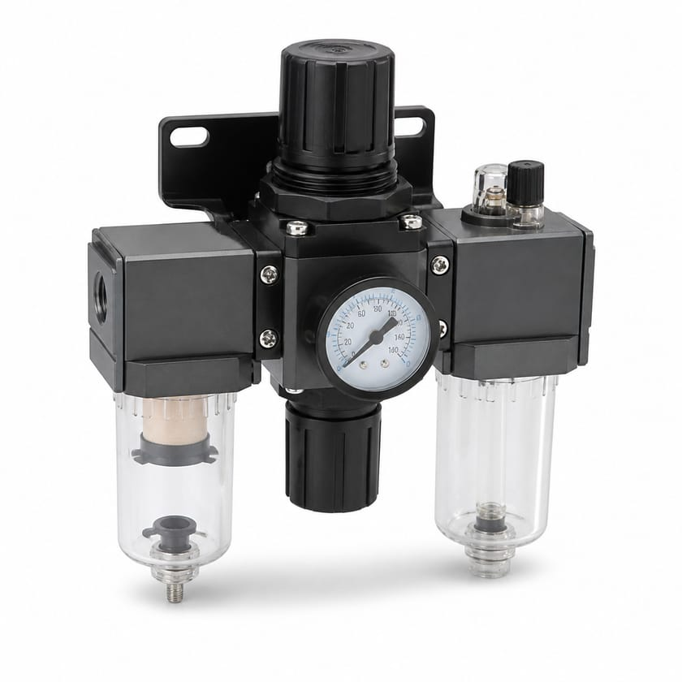
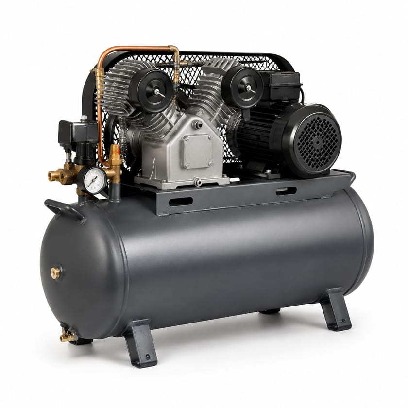
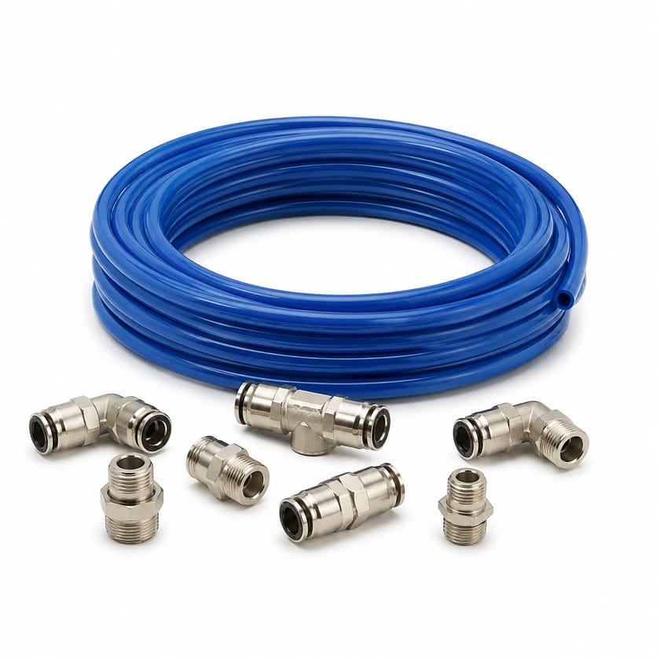
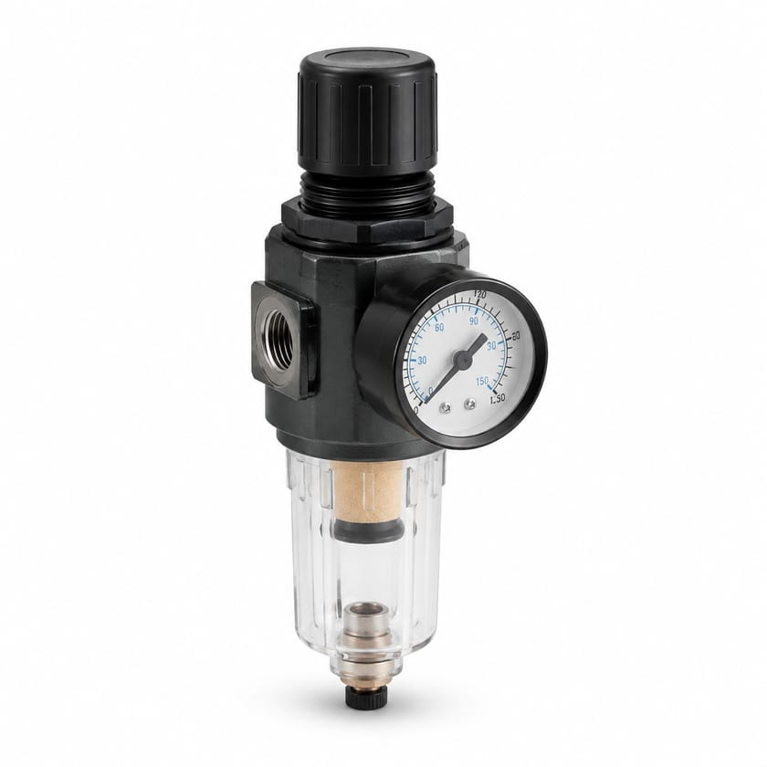
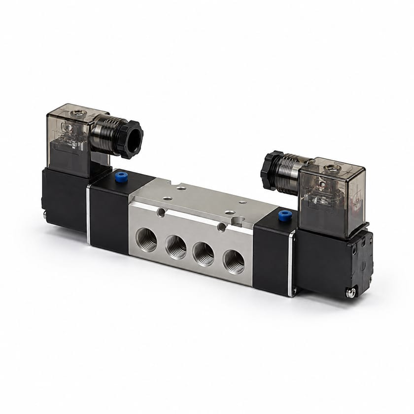

Vérins & composants à vide
Pneumatic Cylinder
Vérin pneumatique transformant l’air comprimé en mouvement linéaire.
À préciser Alésage, course, pression, type de fixation et détection de position
Demander un prixPneumatique & Air Comprimé
Vérins, distributeurs, traitement de l’air et composants pneumatiques pour les lignes de production, les ateliers et les installations industrielles.

Parcourir

Vérins pneumatiques, ventouses, générateurs de vide et vérins rotatifs.
15 références
Distributeurs 3/2, 5/2 et 5/3, îlots de distribution et bobines.
10 références
Filtres, régulateurs, lubrificateurs, sécheurs et séparateurs.
9 références
Compresseurs, réservoirs, réseaux d’air et accessoires de ligne.
8 références
Tubes polyuréthane et nylon, raccords instantanés et enrouleurs.
9 référencesSélection
Trois articles parmi les plus demandés de la famille. Le catalogue complet se trouve juste en dessous.

Vérins & composants à vide
Vérin pneumatique transformant l’air comprimé en mouvement linéaire.
À préciser Alésage, course, pression, type de fixation et détection de position
Demander un prix
Traitement de l’air (FRL)
Unité FRL filtrant, régulant et lubrifiant l’air en un seul module.
À préciser Taille de raccord, débit, plage de régulation, filtration et type de purge
Demander un prix
Distributeurs & électrovannes
Distributeur 5 orifices, 2 positions, standard pour vérin double effet.
À préciser Taille de raccord, débit, tension de bobine, rappel ressort ou bistable
Demander un prixCatalogue
Les 51 références types de cette famille. Filtrez, cherchez, puis demandez un prix pour n’importe laquelle.
Aucune référence ne correspond à votre recherche. Décrivez-nous l’article directement : nous l’identifions.
Distributeur pneumatique orientant l’air comprimé vers les orifices de travail.
À préciser Voies et positions, taille de raccord, débit, pression et type de commande
Composants pneumatiques & vide
Distributeur à commande électrique par bobine, pour pilotage automatisé de l’air.
À préciser Voies et positions, tension de bobine, taille de raccord, débit et pression
Composants pneumatiques & vide
Vérin pneumatique transformant l’air comprimé en mouvement linéaire.
À préciser Alésage, course, pression, type de fixation et détection de position
Composants pneumatiques & vide
Ensemble filtre-régulateur-lubrificateur préparant l’air avant les organes de commande.
À préciser Taille de raccord, débit, plage de régulation, degré de filtration et purge
Composants pneumatiques & vide
Pompe créant une dépression pour la préhension, le maintien ou le procédé.
À préciser Débit d’aspiration, vide maxi, technologie (sèche ou lubrifiée) et alimentation
Composants pneumatiques & vide
Générateur de vide à effet Venturi alimenté par l’air comprimé du réseau.
À préciser Vide maxi, débit aspiré, consommation d’air et raccordement
Composants pneumatiques & vide
Ventouse de préhension adaptée à la forme et à l’état de surface de la pièce.
À préciser Diamètre, forme (plate, à soufflet), matière et raccord
Composants pneumatiques & vide
Vérin normalisé ISO 15552, interchangeable entre fabricants.
À préciser Alésage, course, amortissement, fixation et détecteurs
Vérins pneumatiques
Vérin court à faible encombrement pour montage en espace réduit.
À préciser Alésage, course, type de tige, fixation et détection
Vérins pneumatiques
Vérin à corps rond en inox, simple et économique.
À préciser Alésage, course, simple ou double effet, fixation et raccords
Vérins pneumatiques
Vérin à guidage intégré reprenant les efforts radiaux et évitant la rotation.
À préciser Alésage, course, charge admissible, précision de guidage et fixation
Vérins pneumatiques
Vérin sans tige offrant une course longue pour un encombrement réduit.
À préciser Alésage, course, charge et moment admissibles, type d’entraînement
Vérins pneumatiques
Actionneur pneumatique produisant un mouvement de rotation limité en angle.
À préciser Couple, angle de rotation, pression, réglage de butée et fixation
Vérins pneumatiques
Vérin à course très courte pour bridage, indexage et poussée locale.
À préciser Alésage, course, effort à la pression de service et fixation
Vérins pneumatiques
Accessoires de fixation d’un vérin : équerres, chapes, tourillons et rotules.
À préciser Alésage du vérin, norme de fixation et type d’accessoire
Vérins pneumatiques
Distributeur 3 orifices, 2 positions, pour commande de vérin simple effet ou de ligne.
À préciser Taille de raccord, débit, tension de bobine, NF ou NO, et pression
Distributeurs & électrovannes
Distributeur 5 orifices, 2 positions, standard pour vérin double effet.
À préciser Taille de raccord, débit, tension de bobine, rappel ressort ou bistable
Distributeurs & électrovannes
Distributeur 5 orifices, 3 positions, avec centre fermé, ouvert ou à pression.
À préciser Type de centre, taille de raccord, débit, tension de bobine et pression
Distributeurs & électrovannes
Îlot regroupant plusieurs distributeurs sur une embase commune, souvent avec bus de terrain.
À préciser Nombre de postes, fonction par poste, protocole de communication et tension
Distributeurs & électrovannes
Distributeur à commande manuelle par levier, avec ou sans crantage.
À préciser Voies et positions, taille de raccord, débit et type de rappel
Distributeurs & électrovannes
Distributeur à pédale libérant les mains de l’opérateur au poste de travail.
À préciser Voies et positions, taille de raccord, débit, capot de protection
Distributeurs & électrovannes
Distributeur piloté pneumatiquement à distance depuis un signal d’air.
À préciser Voies et positions, pression de pilotage, taille de raccord et débit
Distributeurs & électrovannes
Bobine de commande électrique d’un distributeur pneumatique.
À préciser Tension et fréquence, puissance, connectique et indice IP
Distributeurs & électrovannes
Silencieux d’échappement réduisant le bruit de décharge d’un distributeur.
À préciser Taille de raccord, débit d’échappement, matière et atténuation
Distributeurs & électrovannes
Réducteur de débit réglant la vitesse de sortie ou de rentrée d’un vérin.
À préciser Taille de raccord, plage de réglage, unidirectionnel ou bidirectionnel
Distributeurs & électrovannes
Unité FRL filtrant, régulant et lubrifiant l’air en un seul module.
À préciser Taille de raccord, débit, plage de régulation, filtration et type de purge
Traitement de l’air (FRL)
Filtre retenant particules et condensats en amont des organes pneumatiques.
À préciser Taille de raccord, débit, finesse en micromètres et type de purge
Traitement de l’air (FRL)
Régulateur maintenant une pression aval stable malgré les variations amont.
À préciser Plage de réglage, débit, taille de raccord et manomètre intégré
Traitement de l’air (FRL)
Lubrificateur dosant un brouillard d’huile dans l’air pour les outils et vérins.
À préciser Taille de raccord, débit, capacité de cuve et réglage de dosage
Traitement de l’air (FRL)
Séparateur éliminant l’eau condensée du réseau d’air comprimé.
À préciser Débit, taille de raccord, efficacité de séparation et purge
Traitement de l’air (FRL)
Sécheur abaissant le point de rosée de l’air comprimé pour protéger les équipements.
À préciser Débit traité, point de rosée visé, pression, technologie et alimentation
Traitement de l’air (FRL)
Purgeur évacuant les condensats sans perte d’air excessive.
À préciser Type (manuel, automatique, électronique), pression, débit et raccord
Traitement de l’air (FRL)
Manomètre de lecture de la pression d’air du réseau ou du poste.
À préciser Étendue de mesure, diamètre du cadran, raccord et position de montage
Traitement de l’air (FRL)
Valve de mise en pression progressive évitant les à-coups au démarrage.
À préciser Taille de raccord, débit, seuil de basculement et commande
Traitement de l’air (FRL)
Compresseur à pistons pour usage d’atelier ou service intermittent.
À préciser Débit, pression maxi, puissance et tension moteur, volume de cuve
Compresseurs & réseaux
Compresseur à vis pour production d’air continue en usine ou sur site.
À préciser Débit, pression, puissance et tension, régulation fixe ou variable
Compresseurs & réseaux
Réservoir d’air tamponnant la demande et limitant les cycles du compresseur.
À préciser Volume, pression de service, piquages, certification et position
Compresseurs & réseaux
Refroidisseur final abaissant la température de l’air en sortie de compresseur.
À préciser Débit, température d’entrée et de sortie, type air ou eau, raccords
Compresseurs & réseaux
Sécheur frigorifique séchant l’air par condensation, pour usage industriel courant.
À préciser Débit traité, point de rosée, pression, alimentation et raccords
Compresseurs & réseaux
Sécheur par adsorption atteignant des points de rosée très bas.
À préciser Débit traité, point de rosée visé, type de régénération et pression
Compresseurs & réseaux
Tuyauterie de distribution d’air comprimé, en aluminium ou en acier.
À préciser Diamètre, matière, pression, longueur et raccords requis
Compresseurs & réseaux
Nourrice répartissant l’air comprimé vers plusieurs départs.
À préciser Nombre et taille des départs, pression, matière et fixation
Compresseurs & réseaux
Tube polyuréthane souple, résistant à la flexion répétée.
À préciser Diamètre extérieur et intérieur, pression, rayon de courbure, couleur et longueur
Tubes & raccords pneumatiques
Tube nylon rigide, adapté aux températures et pressions plus élevées.
À préciser Diamètre extérieur et intérieur, pression, température et longueur
Tubes & raccords pneumatiques
Raccord instantané pour tube pneumatique, sans outil de montage.
À préciser Diamètre de tube, filetage, forme et matière du corps
Tubes & raccords pneumatiques
Raccord coudé permettant un changement de direction à 90°.
À préciser Diamètre de tube, filetage, orientation fixe ou orientable
Tubes & raccords pneumatiques
Raccord en T dérivant l’air vers deux départs.
À préciser Diamètre de tube, filetage éventuel et configuration des départs
Tubes & raccords pneumatiques
Traversée de cloison assurant le passage d’une ligne à travers une paroi.
À préciser Diamètre de tube, épaisseur de paroi, filetage et matière
Tubes & raccords pneumatiques
Raccord rapide permettant le branchement et le débranchement d’outils sans outillage.
À préciser Profil de coupleur, taille de raccord, débit et pression
Tubes & raccords pneumatiques
Flexible spiralé se rétractant après usage, pour poste d’outillage.
À préciser Diamètre, longueur déployée, pression et raccords montés
Tubes & raccords pneumatiques
Enrouleur rangeant le flexible d’air et limitant les risques de trébuchement.
À préciser Longueur et diamètre de flexible, pression, enroulement manuel ou automatique
Tubes & raccords pneumatiques
Les photographies illustrent le type d’article et ne représentent ni une marque ni une référence précise. Tout article du catalogue peut être demandé, photographié ou non.
Applications
Sourcing technique
Vous n’avez pas toujours besoin de connaître la référence exacte. SUJO peut analyser une plaque signalétique, une photo, un plan, une fiche technique ou un composant existant afin d’identifier la bonne pièce, de vérifier la compatibilité et de proposer des solutions OEM, équivalentes ou alternatives selon les exigences du projet.
Demander un devis
Tout ce que vous avez suffit pour commencer. S’il vous manque un élément, envoyez le reste : nous complétons par la recherche technique.